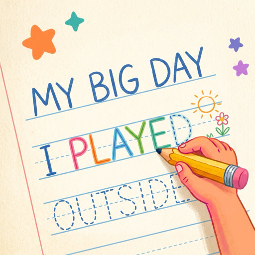

Handwritten Journal
Formation feedback inside meaningful writing, not in a drill.
The child's own sentence is the guide text. The feedback happens while they write it.
A child dictates what happened today; the transcript is laid out on a ruled page as guide text in a large print face. They write over it with an Apple Pencil. Each letter is scored for accuracy as the ink lands, stroke order and direction are judged against ball-and-stick print formations, and a letter formed out of order triggers a demonstrate-then-trace lesson before the page continues. Finished lines lose their guide and stay as the child's handwriting; the page is archived with its transcript.
- Per-letter accuracy. Ink inside the letterform is green, outside is red, live. An untraced letter scores zero, so half a word scores like half a word.
- Stroke order judged leniently, docked only when clear. A letter whose parts were drawn out of the taught order or against the taught direction keeps 80% of its score. Pen lifts and go-overs are ignored.
- One lesson per word. When a word is finished with a wrong-order letter, that letter is demonstrated stroke by stroke and traced correctly before writing resumes — and only that letter.
- Progress per setting. Scores are kept per typeface-and-size, so moving a child to a smaller size never reads as regression.
The lesson: the word with the letter that missed its order, then the letter drawing itself. Tracing it correctly closes the card.
1Dictate
On-device speech recognition; no audio is stored. Words stay editable until they are written, so a misheard word never enters the record. A keyboard path exists for children who prefer it.
2Trace
One continuous page. The child selects a row by writing on it; a resting hand is rejected by touch size. Eraser, undo and a scroll button that needs no gesture.
3Review
The journal keeps every page with its date, accuracy, stars and setting. Export a page or the whole journal as a PDF, with or without the scores.
Adjustable, per child
- Five print typefaces — Jua, Andika, Varela Round, Sniglet, Comic Neue — and five sizes, each previewed at real size. Stroke-order judgment is active in Jua, the face the formations are fitted to.
- Designed for Apple Pencil; a left-handed layout mirrors the controls and the row handles.
- Color-blind ink pair (blue/orange) in place of green/red; haptics on or off; guide lines on or off.
- A practice sheet — every letter Aa to Zz and 0 to 9 — where each character animates its formation and is traced with the same engine.
What it is and is not
It is a journal with a handwriting engine underneath, for children of roughly five to eight who can speak in sentences. It is not a clinical instrument: there are no norms, no timing measures, no letter-size analysis and no cursive. Formations follow ball-and-stick print in the order most US classrooms teach; it is not a licensed program.
If it would help your caseload to have something it does not do, say so. The requests list is the roadmap.
Ages 5 to 8Speaks in sentences; forming letters
iPad, iOS 18+Designed for Apple Pencil
Journal stays on the iPadNo data collection
Per-letter scoringLive green/red; order discount 80%
Teach on failureOne letter, one lesson, mid-writing
PDF exportWith or without accuracy scores
Draft 2026-09-02 · screenshots from the iPad simulator with synthesized handwriting · web address to be confirmed